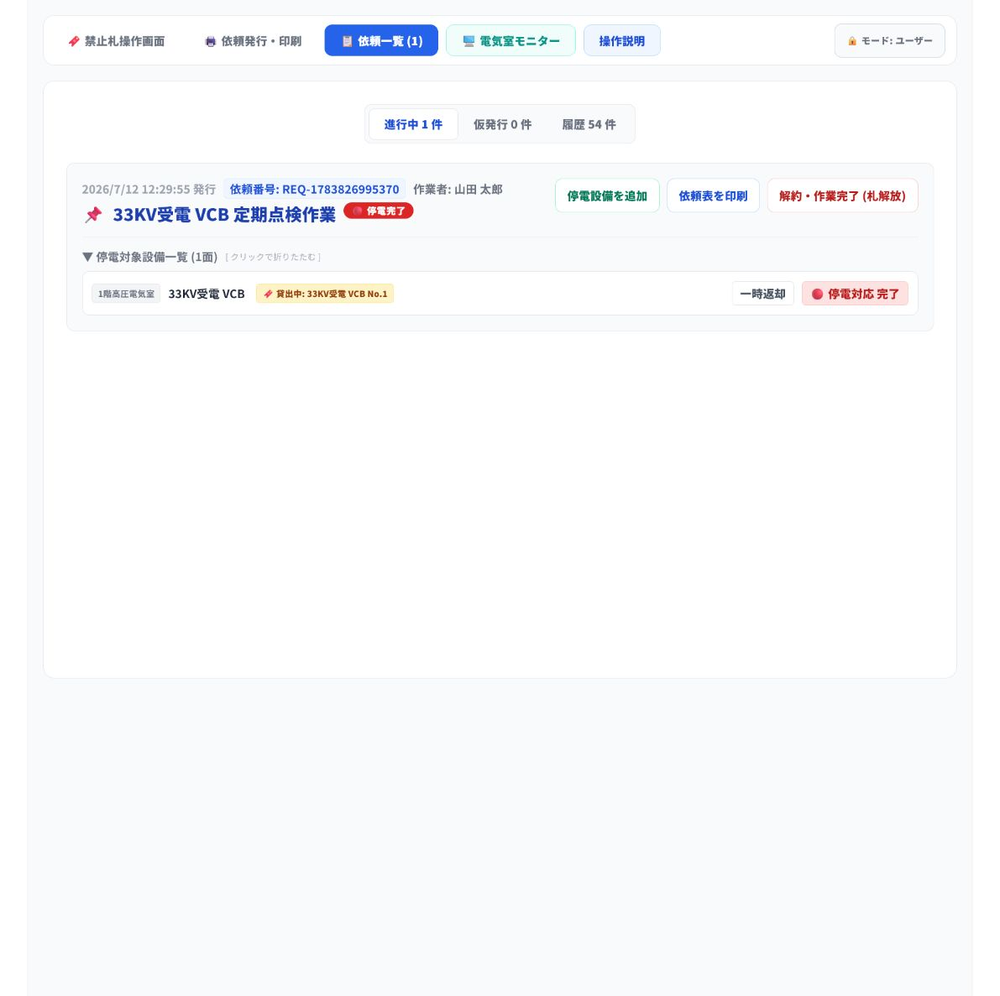
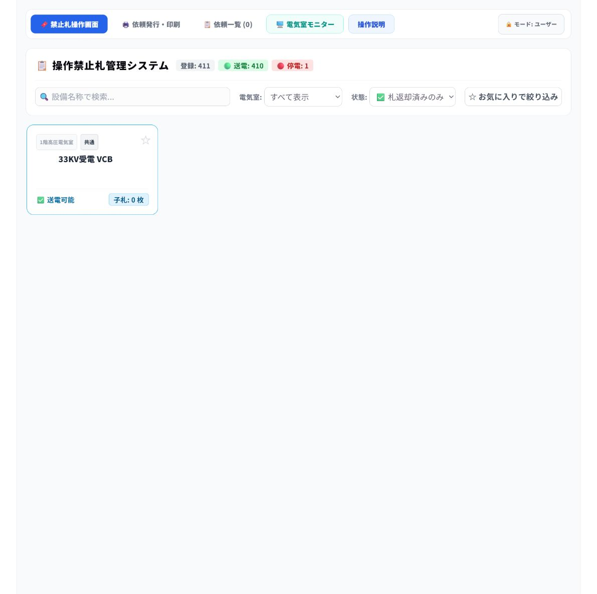
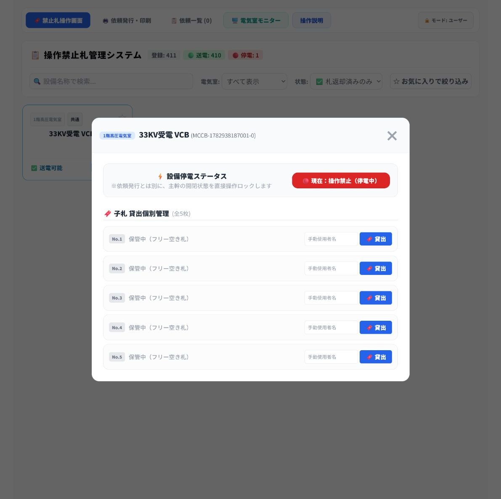
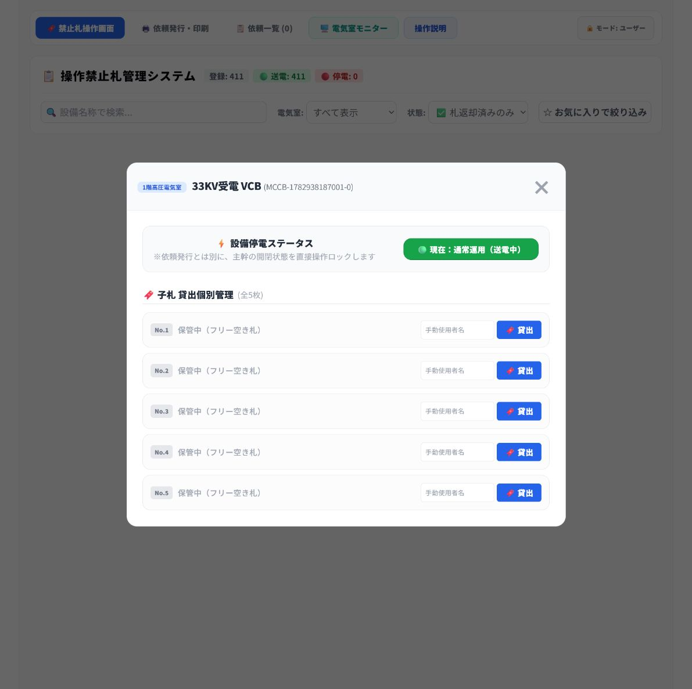

対象画面: http://192.168.40.59:5000/#/
この手順書は、停電作業完了後に依頼表と子札を受け取り、依頼を解約して対象設備を送電状態へ戻すまでの通常手順です。
1. 作業者から、印刷した依頼表と返却された子札を受け取ります。
2. 依頼一覧で該当の依頼を探し、依頼表の内容を確認します。
3. 対象設備一覧と子札の名称・番号が一致することを確認します。
4. 一致していれば、依頼を解約・作業完了にします。
5. 札操作画面で、状態を 札返却済みのみ に切り替えます。
6. 対象設備が 送電可能 であることを確認し、実際の禁止札掛けに子札5枚がそろっていることを確認します。
7. 現地の安全手順に従って、実際の設備を送電します。
8. 操作画面で対象設備を送電状態に切り替え、表示が 通常運用（送電中） に変わったことを確認します。
1. 作業者から、印刷済みの依頼表と子札を受け取ります。
2. 依頼表に記載された作業責任者名、作業内容、対象設備を確認します。
3. 子札に記載された設備名称と子札番号を確認します。
確認ポイント
• 依頼表、返却された子札、画面上の設備名称がすべて一致していることを確認します。
• 子札が不足している、または名称・番号が一致しない場合は、解約や送電を行わず責任者へ確認します。
1. 上部メニューの 依頼一覧 を選択します。
2. 進行中 の依頼から、依頼表の作業責任者名・作業内容・設備名が一致する依頼を探します。
3. 停電対象設備一覧 を展開します。
4. 表示された電気室名、設備名、貸出中の子札番号を、依頼表と子札に照合します。

確認例: 対象設備は「33KV受電 VCB」、子札は「33KV受電 VCB No.1」です。
1. 依頼表、対象設備、子札がすべて一致していることをもう一度確認します。
2. 依頼一覧の 解約・作業完了（札解放） を押します。
3. 進行中の依頼一覧から当該依頼がなくなったことを確認します。
注意: 一致確認前に解約しないでください。未返却の子札がある場合は、先に責任者へ確認します。
1. 上部メニューの 禁止札操作画面 を選択します。
2. 画面中央の 状態 プルダウンで ✅ 札返却済みのみ を選択します。
3. ✅ 送電可能 と表示された対象設備だけが表示されることを確認します。
4. 表示された設備名が、依頼表に記載された設備名と一致することを確認します。
5. 画面上で子札が 0枚 と表示され、送電可能であることを確認します。

1. 実際の禁止札掛けに、対象設備の子札を含む子札 5枚すべて がそろっていることを確認します。
2. 現地の送電条件と安全手順を確認し、実際の設備を送電します。
3. 送電後、✅ 送電可能 と表示された対象設備カードを選択します。
4. 設備名、子札が 0枚 であること、状態が 現在：操作禁止（停電中） であることを確認します。
5. 赤い 現在：操作禁止（停電中） ボタンを押して、操作画面の状態を送電中へ切り替えます。

注意: 画面上で「送電可能」かつ子札0枚であり、実際の禁止札掛けに子札5枚がそろっていることを確認します。現地の実設備を送電した後に、操作画面の送電操作を実施してください。
1. 表示が 現在：通常運用（送電中） に変わったことを確認します。
2. 画面上部の集計で、停電台数が減り、送電台数が増えたことを確認します。
3. 必要に応じて、依頼表を所定の場所へ返却・保管します。

| 確認項目 | チェック |
|---|---|
| 依頼表と対象設備名が一致している | □ |
| 依頼表と子札の名称・番号が一致している | □ |
| 依頼を解約・作業完了にした | □ |
| 状態を「札返却済みのみ」に切り替えた | □ |
| 対象設備が「送電可能」、子札が0枚であることを確認した | □ |
| 実際の禁止札掛けに子札5枚がそろっていることを確認した | □ |
| 現地の送電条件と安全手順を確認した | □ |
| 現地の実設備を送電した | □ |
| 表示が「通常運用（送電中）」になったことを確認した | □ |